Canadian Music Competition
Awarded First Prize at the national level, showcasing exceptional skill and artistry in violin performance.
01 / Music
Violin Journey
My violin journey has taken me through competitions, intensive music programs, prestigious academies, and youth orchestras. Each environment has challenged me to become not only a stronger performer, but a more thoughtful and collaborative musician.
Music has also been a consistent outlet, allowing me to express my emotions in an artistic and creative manner. Through music, I have met some of the most amazing people in my life, and I have learned incredible leadership, communication and disciplinary skills that I continue to apply in my daily life.
From the discipline of individual practice to the energy of ensemble performance, music has remained a constant way for me to learn, communicate, and connect with other people, and improve on myself as a person.
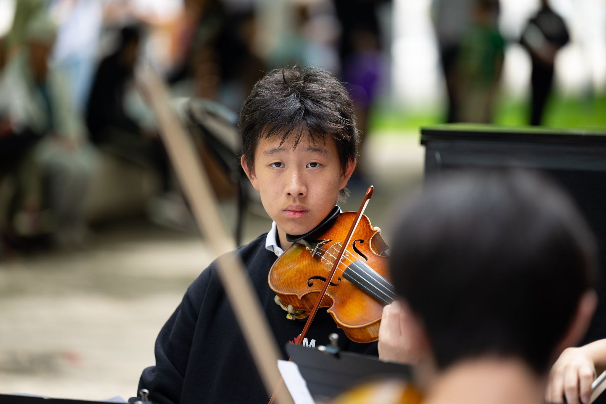
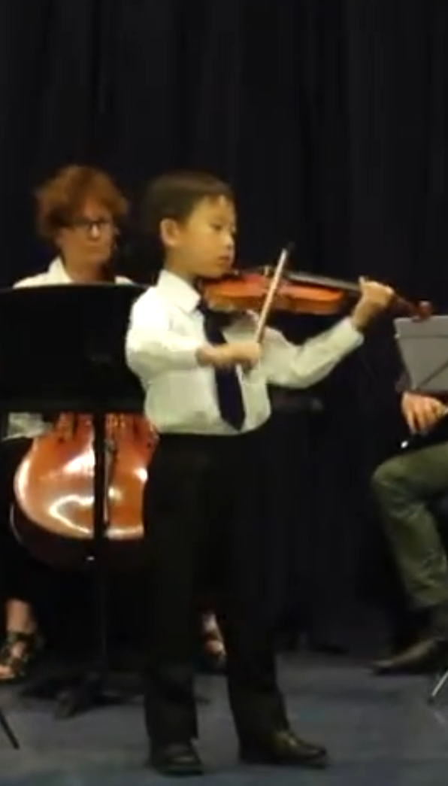
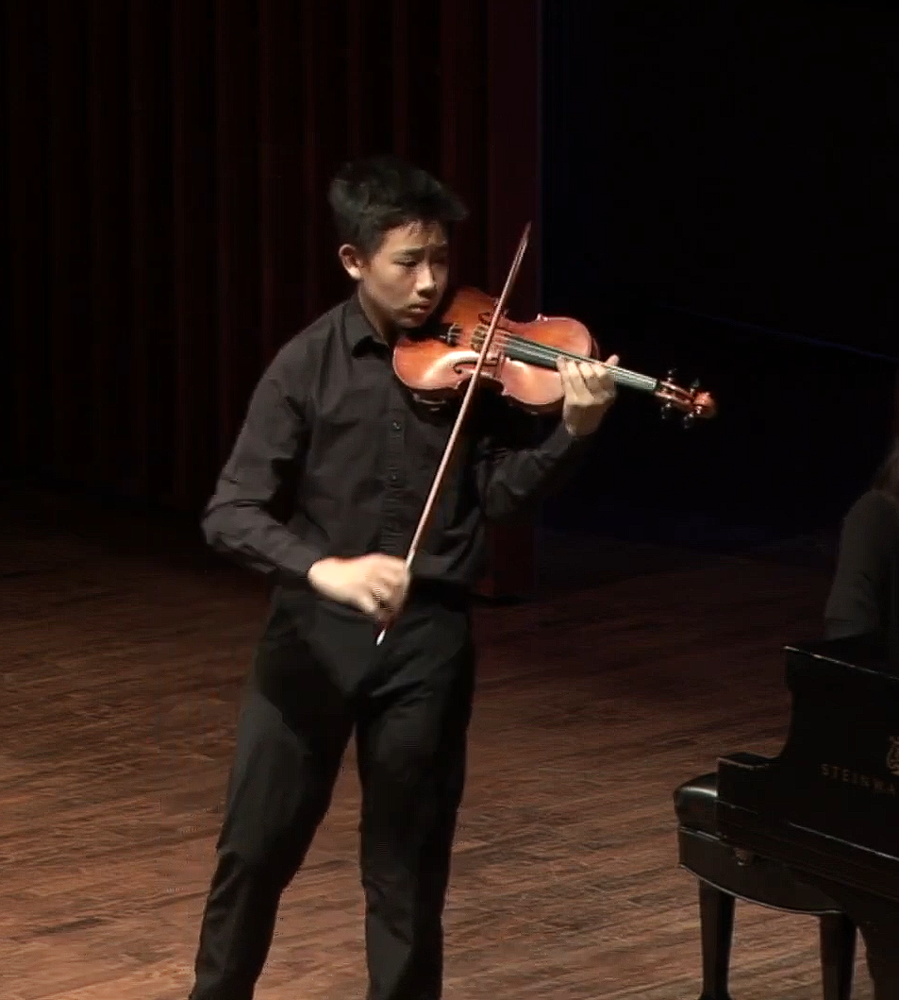
Performance
Through the years, Competitive performance has taught me how to balance precision with expression and with elegance. Preparing for competitions has meant months of technical work, interpretation, rehearsal, and reflection.
Constantly practicing these skills haven't only bring me from small recitals at age five to national competitions at age twelve, but also transformed me from being a boy playing with his friends to a man of character.
Notable Performances & Competitions
Academy / intensive programs
Youth orchestra experiences
01 / Notable Performances & Competitions
Competition has taught me to approach performance with both technical discipline and artistic intention. Each experience has pushed me to refine my preparation, deepen my interpretation, and become more confident on stage. The process behind the performance has strengthened my time management capabilities, discipline, and resilience. My stage presence has greatly improved, and with it, my confidence and abiliity to not only communicate with an audience, but also with regular people.
Awarded First Prize at the national level, showcasing exceptional skill and artistry in violin performance.
I performed as a featured soloist at the Taylor Academy Showcase Concert in the historic Mazzeolini Hall.
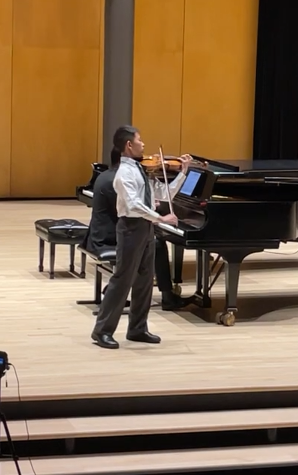
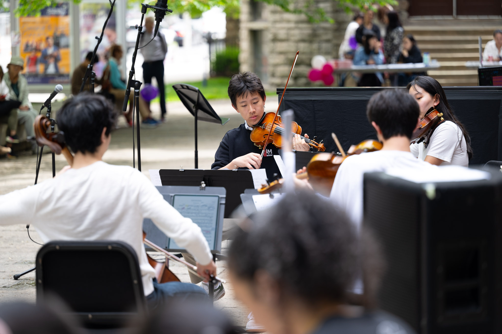
02 / Academy & Intensive Programs
Intensive programs and advanced academies have exposed me to new teachers, musicians, and musical traditions. These experiences have expanded both my technical foundation and the way I think about interpretation, collaboration, and artistic growth.
Selected to study at the prestigious Taylor Academy, where I received advanced training in violin performance, chamber music, musicianship, music theory and history.
Selected as the principle second violinist for Boston University Tanglewood Institute's Young Artists Orchestra, where I collaborated with and led talented musicians to perform a diverse repertoire of classical works.
03 / Youth Orchestra
Orchestral music has taught me to listen as much as I play and talk. Working within a larger ensemble has strengthened my sense of timing, responsibility, communication, and leadership while showing me how individual musicians contribute to a shared sound and similarly, how individual efforts can contribute to large success.
Performed as a member of the Taylor Academy Chamber Orchestra, collaborating with fellow musicians, bringing excellence to classical and contemporary repetoire, and performing on stages such as the historic Masseolini Hall, and the world renowned Koerner Hall.
Performed as a member of the Toronto Symphony Youth Orchestra, participating in masterclasses, rehearsals, and performances on halls such as world renowned Roy Thomson Hall, and collaborating with professional musicians from the Toronto Symphony Orchestra.

Archive
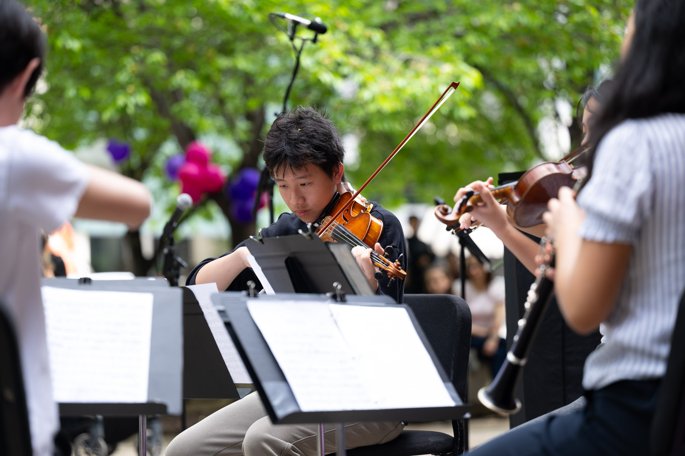
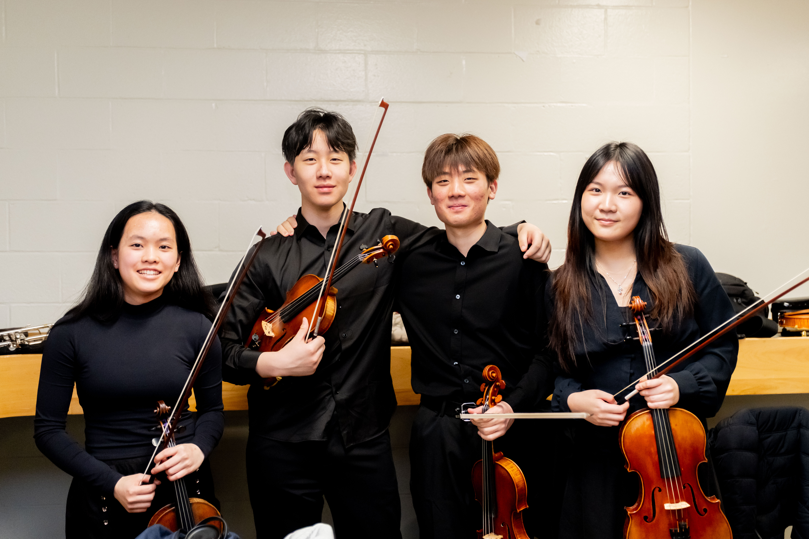
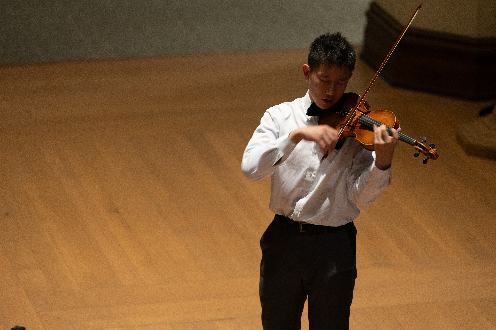
Leadership
Beyond performing, I founded and lead a student music club designed to create a welcoming space for musicians who are often underrepresented in traditional music spaces.
The club brings students together to perform, collaborate, experiment with composition, exchange ideas, and learn from one another. Teaching composition has also given me the opportunity to help other students move from simply consuming music to creating it.
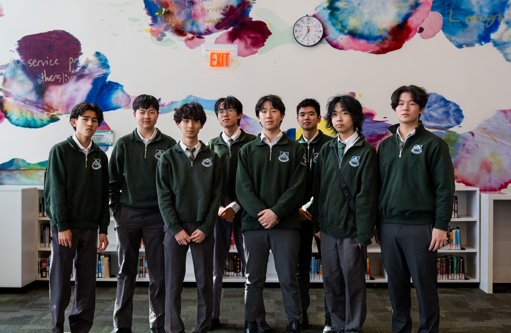
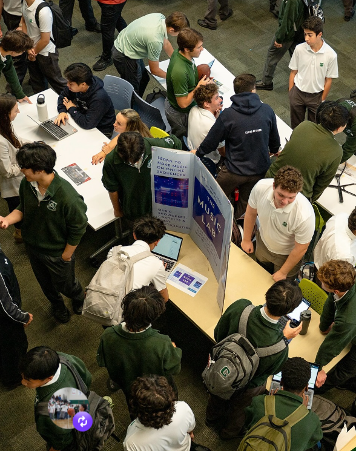
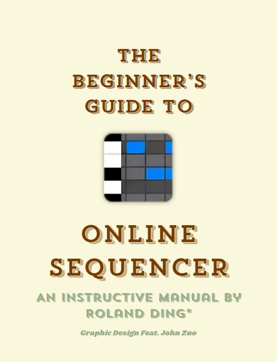
Discography
My published seven-song album brings together my work not only as a performer and composer, but also a deep realism thinker, as I reflect upon my understanding of the world, hence the album name "Formally Operational"
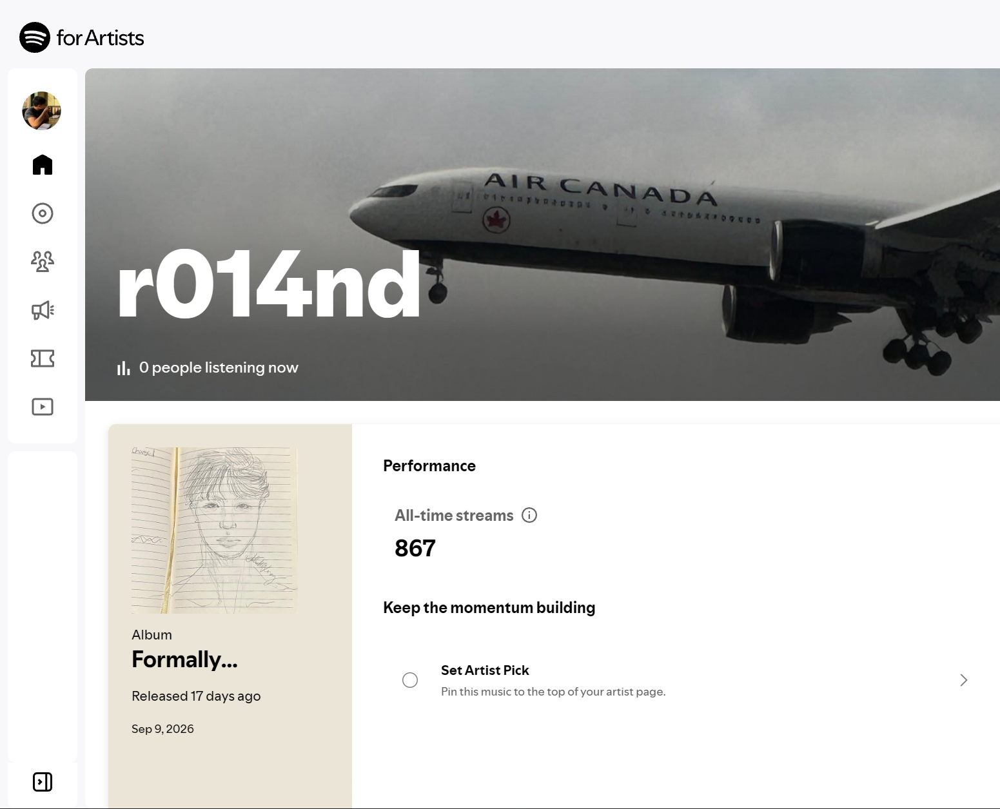
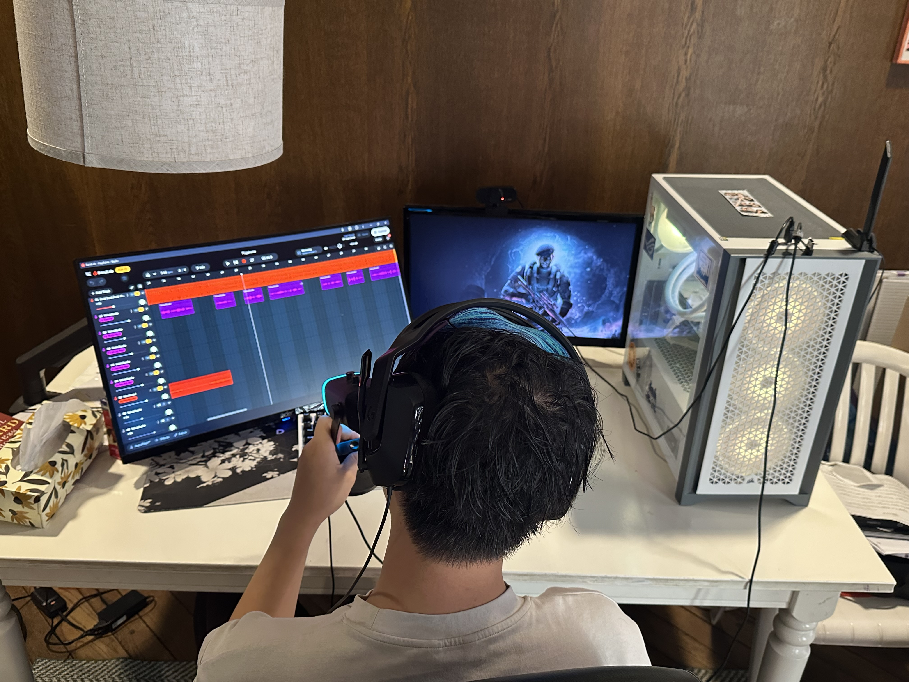
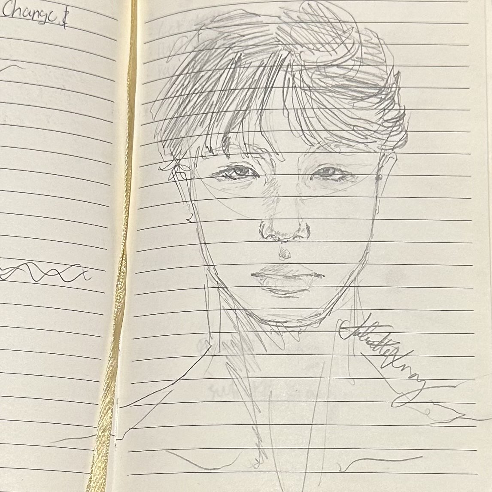
Listen
Music is performance, collaboration, experimentation, and connection.